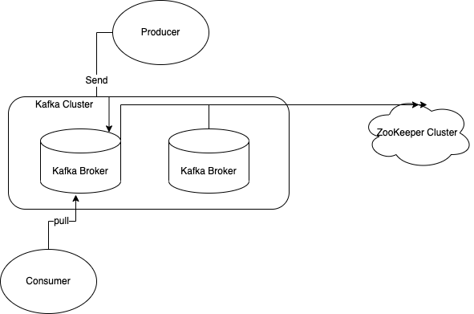
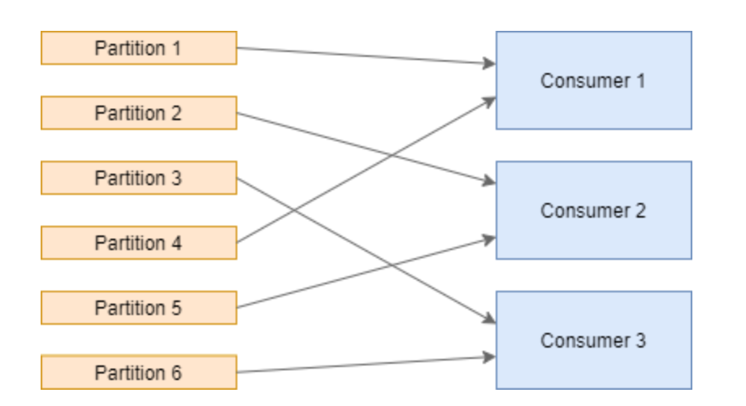
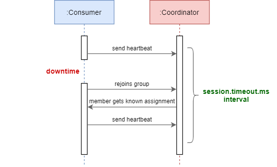

什么是Kafka
消息系统
Kafka和传统的消息系统都具备系统解耦，冗余存储，流量削峰，缓冲，异步通信，可恢复行等功能。此外，Kafka还具备消息顺序型保障和回溯消费的功能。
Kafka适合大数据，日志处理等高吞吐的离线业务。
存储系统
Kafka把消息持久化到磁盘以及多副本机制，有效地降低了数据丢失的风险。
流式处理平台
Kafka不仅为每个流行的流失处理框架提供了可靠的数据来源，还提供一个完整的流式处理类库，比如窗口，链接，变换和聚合等各类操作。

Kafka基础概念
Topic 与分区（partition）
消费者与消费组
存储视图
多副本
Kafka拓展
- Kafka Connect。Kafka与外部存储系统之间的数据迁移。
- Mirror Maker。两个集群间同步数据的工具。
- Kafka Streams
- 死信队列。不支持，需要用户实现
- 重试队列。不支持，需要用户实现
- 优先级队列。不支持。
- 延时队列。用户使用时间轮实现
- 消息轨迹。指一条消息从生产者发出，经由broker存储，再到消费的整个过程中，各个节点的状态，时间，地点等数据汇聚而成的完整链路信息。
- 消息审计。指对生产，存储，消费过程中对消息个数以及延迟的审计，以此来检测是否有数据丢失，有数据重复，端到端的延迟等内容。
发送耗时（latency）上升
当发送的QPS上升，消息体变大，Broker负载高，底层Queue负载高或者网络抖动丢包时，发送耗时上升。
- 发送QPS上涨。发送QPS个latency基本正相关
- 消息体变大
消费堆积
单个（某几个特定）分区堆积
原因可能是：
- 发送不均匀。这些分区发送数量大于其他的
- 对应实例消费缓慢，handler执行耗时高
- 对应实例消费者卡住。消费者在消费某一个事件卡住，无法提交这条消息的offset，
- 使用了严格有序+无限（超长次数）重试，未能处理的消息一直在重试不能ack
所有分区堆积
原因可能是：
- 消费（流入）QPS小于发送（流入）QPS
- 消费handler耗时高
- 消息并发不足。考虑对消息消费是够有顺序要求
- 消费者频繁断线重连。基于分区的消费者模型，在消费者实例变化时会自动rebalance，尽可能地将负载均匀分配到各个消费者上。消费者实例的频繁变化，导致整个消费者一直处在rebalance状态，没办法消费正常的消息。
引入MQ带来的问题
- 系统可用性
- MQ不可用时的降级方案
- 复杂性
- 重复消费
- 消息丢失
- 非顺序消费
- 数据一致性
- 分布式事务
Rebalance问题
Rebalance(再均衡)机制指的是，当消费者数量变化(加入或离开消费者组)时，将一个Topic下的多个分区，在同一个消费者组（consumer group）下的多个消费者实例（consumer instance）之间进行重新分配。

Rebalance危害：
- 消费暂停。在分区重新分配对应的消费者时，当前的分区会暂停消费（处理消息）。
- 重复消费。一条消息，之前的消费者消费了还没有提交offset时，发生了rebalance，新的消费者重新消费这条信息。
- 消费突刺。如果rebalance时间过长，导致挤压了部分消息，可能导致在rebalance之后瞬间需要消费很多消息。
使用Kafka static membership解决。link
Kafka static membership is a new feature introduced with Kafka 2.3. It allows the coordinator to persist member identities and to recognize restarted members. This is possible via the consumer configuration group.instance.id. If a consumer restarts for any reason, the group coordinator can assign the same partitions to the consumer without rebalancing everything. This process must happen within the session.timeout.ms limit’s bounds because the member does not leave the consumer group until the timeout is exceeded. Otherwise, the consumer is considered dead, and consequently, rebalancing occurs.
